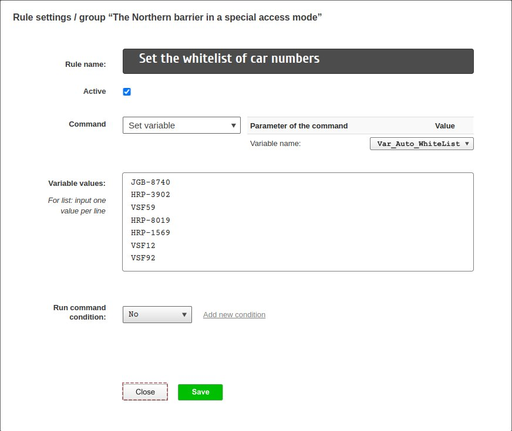

2020–2021 · 网络监控设备制造商
网络监控设备的固件、界面构想与 FAD 架构
该公司开发用于网络设备远程监控和电源管理的设备。我在其 Linux 固件部门远程工作。客户提出了用规则描述设备行为的想法；我主动在没有需求规格的情况下提出了实现方案——FAD 架构，以及为下一代基于 OpenWrt 的固件设计的一系列交互式界面原型。
我做了什么
- LTE 网关设备（OpenWrt，SIMCom SIM7600）：实现了短信通知。
- 配置 Zabbix 监控公司的设备。
- 为控制继电器和数字输入的 LuCI 页面设计了前后端分离。与后端开发者约定了 ubus 事件接口，使设备实时状态保存在内存中，只有用户明确保存时才写入闪存——以保护其有限的擦写寿命。
- 逐项估算新的界面模块（数字输入；带静默时段和发送条件的通知规则），前端和后端分别估算。
- 撰写了关于软件架构和领域建模的内部技术文章。
FAD：所有模块由同一个通用模块构成
FAD 即 Functionality – Adapter – Driver。驱动与硬件和协议（SNMP、HTTP、GPIO）通信，适配器对数据进行规范化，功能层实现用户关心的内容，界面组件负责显示。所有层都由同一种模块构建。
资源模板：一切皆资源
传感器、输出线路、触发器和通知都成为由模板创建的资源。模板声明所需变量——IP 地址、SNMP OID、轮询间隔、1-Wire 地址——一个变量可被多个模板共享。支持新传感器只需描述模板，而不必编写页面。

逻辑规则：把行为写成有序、可测试的步骤
规则组是一个设备场景——例如机房温控——由有序的规则组成。每条规则在由传感器和事件相关变量构成的条件下执行一条命令（设置变量、切换继电器、发送通知）。原型还支持逐步测试运行，以及记录每次变量变化的事件日志。


